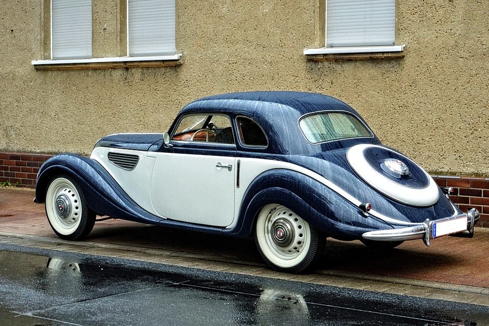
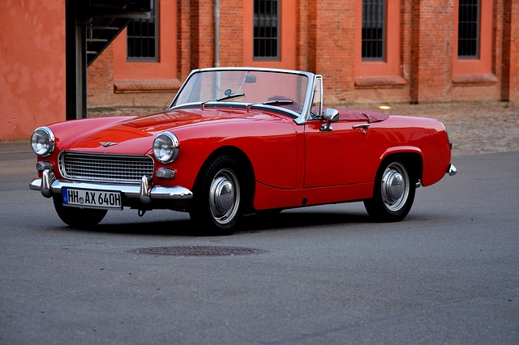

História do Automóvel
O primeiro veículo motorizado a ser produzido com propósito comercial foi um carro com apenas três rodas
Em 1892, Henry Ford produziu seu primeiro Ford na América do Norte
No ano de 1904, surgiu o primeiro Rolls Royce com um radiador que não passaria por nenhuma transformação
Após a primeira Guerra mundial, os fabricantes partiram para uma linha de produção mais barata: os automóveis seriam mais compactos e fabricados em série

Este sistema de produção ficou conhecido como Fordismo
No caso do Brasil e também de outros países da América Latina, está evolução automotora chegou somente após a Segunda Guera Mundial
Foi somente na exposição Universal de 1889, realizada em Paris, que o automóvel foi divulgado em nível mundial. Antes disso, poucas pessoas conheciam a invneção e o interesse era pequeno e restrito

Nos primeiros anos do século XX, a maioria dos automóveis produzidos era movida a energia elétrica ou a vapor
Foi somente na década de 1920 que os automóveis com motor a gasolina passaram a ter preferências dos consumidores
O primeiro automóvel chegou ao Brasil no ano de 1893